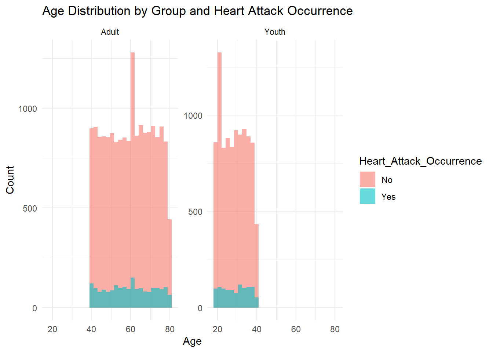
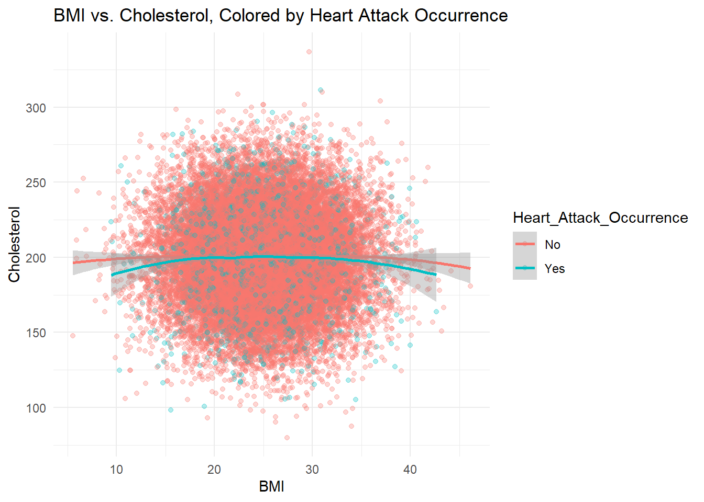
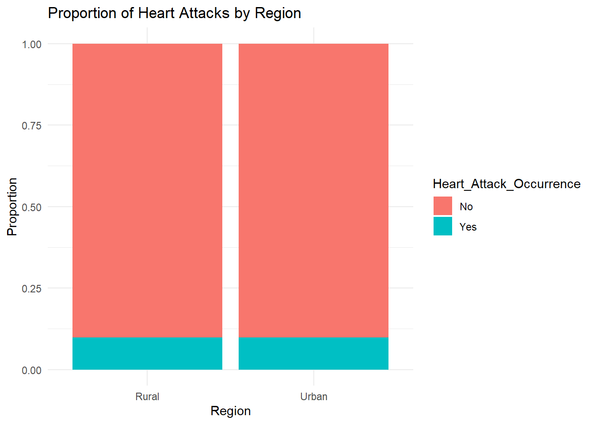
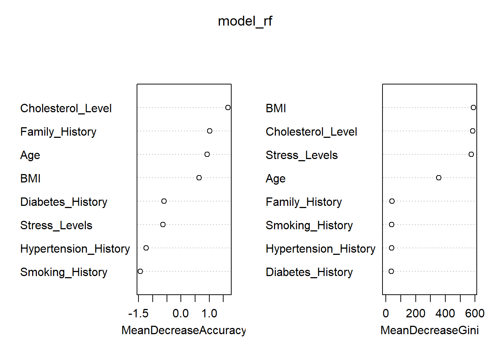

pacman::p_load(tidyverse, plotly, GGally, patchwork, ggridges, ggcorrplot, broom,caret, pROC, factoextra, ggalluvial, ggeffects, randomForest)Take-home Exercise 1
Getting started
heart_data <- read_csv("data/japan_heart_attack_dataset.csv")
# Check structure
glimpse(heart_data)Rows: 30,000
Columns: 32
$ Age <dbl> 56, 69, 46, 32, 60, 25, 78, 38, 56, 75, 36, 40…
$ Gender <chr> "Male", "Male", "Male", "Female", "Female", "F…
$ Region <chr> "Urban", "Urban", "Rural", "Urban", "Rural", "…
$ Smoking_History <chr> "Yes", "No", "Yes", "No", "No", "No", "No", "Y…
$ Diabetes_History <chr> "No", "No", "No", "No", "No", "No", "Yes", "No…
$ Hypertension_History <chr> "No", "No", "No", "No", "No", "No", "Yes", "No…
$ Cholesterol_Level <dbl> 186.4002, 185.1367, 210.6966, 211.1655, 223.81…
$ Physical_Activity <chr> "Moderate", "Low", "Low", "Moderate", "High", …
$ Diet_Quality <chr> "Poor", "Good", "Average", "Good", "Good", "Go…
$ Alcohol_Consumption <chr> "Low", "Low", "Moderate", "High", "High", "Hig…
$ Stress_Levels <dbl> 3.644786, 3.384056, 3.810911, 6.014878, 6.8068…
$ BMI <dbl> 33.96135, 28.24287, 27.60121, 23.71729, 19.771…
$ Heart_Rate <dbl> 72.30153, 57.45764, 64.65870, 55.13147, 76.667…
$ Systolic_BP <dbl> 123.90209, 129.89331, 145.65490, 131.78522, 10…
$ Diastolic_BP <dbl> 85.68281, 73.52426, 71.99481, 68.21133, 92.902…
$ Family_History <chr> "No", "Yes", "No", "No", "No", "No", "No", "No…
$ Heart_Attack_Occurrence <chr> "No", "No", "No", "No", "No", "No", "No", "No"…
$ Extra_Column_1 <dbl> 0.40498852, 0.03627815, 0.85297888, 0.39085280…
$ Extra_Column_2 <dbl> 0.43330004, 0.51256694, 0.21959083, 0.29684675…
$ Extra_Column_3 <dbl> 0.62871236, 0.66839275, 0.61343656, 0.15572404…
$ Extra_Column_4 <dbl> 0.70160955, 0.11552874, 0.50800995, 0.87025144…
$ Extra_Column_5 <dbl> 0.49814235, 0.42381938, 0.90066981, 0.39035591…
$ Extra_Column_6 <dbl> 0.007901312, 0.083932768, 0.227205241, 0.40318…
$ Extra_Column_7 <dbl> 0.79458257, 0.68895108, 0.49634358, 0.74140891…
$ Extra_Column_8 <dbl> 0.29077922, 0.83016364, 0.75210679, 0.22396813…
$ Extra_Column_9 <dbl> 0.49719307, 0.63449028, 0.18150125, 0.32931387…
$ Extra_Column_10 <dbl> 0.52199452, 0.30204337, 0.62918031, 0.14319054…
$ Extra_Column_11 <dbl> 0.79965663, 0.04368285, 0.01827617, 0.90778075…
$ Extra_Column_12 <dbl> 0.72239788, 0.45166789, 0.06322702, 0.54232201…
$ Extra_Column_13 <dbl> 0.1487387, 0.8786714, 0.1465122, 0.9224606, 0.…
$ Extra_Column_14 <dbl> 0.8340099, 0.5356022, 0.9972962, 0.6262165, 0.…
$ Extra_Column_15 <dbl> 0.061632229, 0.617825340, 0.974455410, 0.22860…# (Optional) Clean or rename columns if needed
# heart_data <- heart_data %>%
# rename(Age = age, etc...)
# Decide on "Youth" vs. "Adult" threshold
# For demonstration, let's assume 'Youth' < 40, 'Adult' >= 40
heart_data <- heart_data %>%
mutate(Age_Group = if_else(Age < 40, "Youth", "Adult"))heart_data[duplicated(heart_data),]# A tibble: 0 × 33
# ℹ 33 variables: Age <dbl>, Gender <chr>, Region <chr>, Smoking_History <chr>,
# Diabetes_History <chr>, Hypertension_History <chr>,
# Cholesterol_Level <dbl>, Physical_Activity <chr>, Diet_Quality <chr>,
# Alcohol_Consumption <chr>, Stress_Levels <dbl>, BMI <dbl>,
# Heart_Rate <dbl>, Systolic_BP <dbl>, Diastolic_BP <dbl>,
# Family_History <chr>, Heart_Attack_Occurrence <chr>, Extra_Column_1 <dbl>,
# Extra_Column_2 <dbl>, Extra_Column_3 <dbl>, Extra_Column_4 <dbl>, …for(column_name in names(heart_data)) {
na_count <- sum(is.na(heart_data[[column_name]]))
if (na_count > 0) {
message("Column '", column_name, "' has ", na_count, " NA values.")
}
}# Inspect variance and correlation of "Extra_Column_x"
extra_cols <- grep("^Extra_Column_", names(heart_data), value = TRUE)
# Quick summary
summary(heart_data[extra_cols]) Extra_Column_1 Extra_Column_2 Extra_Column_3 Extra_Column_4
Min. :0.000007 Min. :0.0000052 Min. :0.0000227 Min. :0.0000934
1st Qu.:0.253308 1st Qu.:0.2473606 1st Qu.:0.2483093 1st Qu.:0.2522110
Median :0.500820 Median :0.4961980 Median :0.4976104 Median :0.4976175
Mean :0.501939 Mean :0.4978940 Mean :0.4981949 Mean :0.5005952
3rd Qu.:0.750529 3rd Qu.:0.7473954 3rd Qu.:0.7476807 3rd Qu.:0.7505662
Max. :0.999965 Max. :0.9999894 Max. :0.9999694 Max. :0.9999869
Extra_Column_5 Extra_Column_6 Extra_Column_7 Extra_Column_8
Min. :0.000105 Min. :0.0000531 Min. :0.0000678 Min. :0.0000449
1st Qu.:0.251803 1st Qu.:0.2559989 1st Qu.:0.2482839 1st Qu.:0.2509790
Median :0.501987 Median :0.5017726 Median :0.4988157 Median :0.4985698
Mean :0.501410 Mean :0.5027631 Mean :0.4980753 Mean :0.5003557
3rd Qu.:0.753657 3rd Qu.:0.7511886 3rd Qu.:0.7456378 3rd Qu.:0.7507293
Max. :0.999995 Max. :0.9998892 Max. :0.9999900 Max. :0.9999300
Extra_Column_9 Extra_Column_10 Extra_Column_11
Min. :0.0000305 Min. :0.0000133 Min. :0.0000008
1st Qu.:0.2502452 1st Qu.:0.2484256 1st Qu.:0.2538092
Median :0.4984491 Median :0.5031040 Median :0.5067589
Mean :0.5002292 Mean :0.5010694 Mean :0.5044949
3rd Qu.:0.7512186 3rd Qu.:0.7522686 3rd Qu.:0.7556257
Max. :0.9999852 Max. :0.9999928 Max. :0.9999578
Extra_Column_12 Extra_Column_13 Extra_Column_14
Min. :0.0000713 Min. :0.0000204 Min. :0.0000025
1st Qu.:0.2505341 1st Qu.:0.2473108 1st Qu.:0.2482152
Median :0.5038609 Median :0.5041162 Median :0.4943841
Mean :0.5008624 Mean :0.5004557 Mean :0.4976507
3rd Qu.:0.7511780 3rd Qu.:0.7497094 3rd Qu.:0.7456212
Max. :0.9999484 Max. :0.9999451 Max. :0.9999779
Extra_Column_15
Min. :0.0000241
1st Qu.:0.2482573
Median :0.5009406
Mean :0.4999634
3rd Qu.:0.7487379
Max. :0.9999913 # Quick correlation with Heart_Attack_Occurrence (assuming "Yes"/"No" -> 1/0 conversion)
heart_data <- heart_data %>%
mutate(HA_Flag = if_else(Heart_Attack_Occurrence == "Yes", 1, 0))
cor_vals <- sapply(heart_data[extra_cols], function(col) cor(col, heart_data$HA_Flag, use="complete.obs"))
cor_vals Extra_Column_1 Extra_Column_2 Extra_Column_3 Extra_Column_4 Extra_Column_5
0.0068723720 0.0081270829 0.0018814255 0.0101384226 -0.0029298992
Extra_Column_6 Extra_Column_7 Extra_Column_8 Extra_Column_9 Extra_Column_10
-0.0048613508 0.0011395071 0.0012963044 0.0056251485 -0.0006013661
Extra_Column_11 Extra_Column_12 Extra_Column_13 Extra_Column_14 Extra_Column_15
-0.0035566466 -0.0005152565 -0.0047901932 -0.0010651777 -0.0038557783 # If these correlations are all near zero & the columns have little variance => likely useless# Convert Heart_Attack_Occurrence to a binary flag (if not already done)
heart_data <- heart_data %>%
mutate(HA_Flag = if_else(Heart_Attack_Occurrence == "Yes", 1, 0))
# Identify all numeric columns in the data frame
numeric_cols <- names(heart_data)[sapply(heart_data, is.numeric)]
# Optionally, remove the HA_Flag column from the list to avoid correlating it with itself
numeric_cols <- setdiff(numeric_cols, "HA_Flag")
# Compute the correlation between each numeric column and HA_Flag
cor_vals <- sapply(numeric_cols, function(col) {
cor(heart_data[[col]], heart_data$HA_Flag, use = "complete.obs")
})
# Print the correlation values
cor_vals Age Cholesterol_Level Stress_Levels BMI
0.0053339546 -0.0011603955 -0.0120851026 -0.0052151153
Heart_Rate Systolic_BP Diastolic_BP Extra_Column_1
0.0054838870 -0.0053873653 0.0043340331 0.0068723720
Extra_Column_2 Extra_Column_3 Extra_Column_4 Extra_Column_5
0.0081270829 0.0018814255 0.0101384226 -0.0029298992
Extra_Column_6 Extra_Column_7 Extra_Column_8 Extra_Column_9
-0.0048613508 0.0011395071 0.0012963044 0.0056251485
Extra_Column_10 Extra_Column_11 Extra_Column_12 Extra_Column_13
-0.0006013661 -0.0035566466 -0.0005152565 -0.0047901932
Extra_Column_14 Extra_Column_15
-0.0010651777 -0.0038557783 # Visualization 1: Age Distribution (Ridge or Histogram) + Overlaid by Heart Attack Occurrence
p1 <- heart_data %>%
ggplot(aes(x = Age, fill = Heart_Attack_Occurrence)) +
geom_histogram(position = "identity", alpha = 0.6, bins = 30) +
facet_wrap(~Age_Group, scales = "free_y") +
labs(title = "Age Distribution by Group and Heart Attack Occurrence",
x = "Age", y = "Count") +
theme_minimal()
p1
ggplot(heart_data, aes(x = Smoking_History, fill = Heart_Attack_Occurrence)) +
geom_bar(position = "dodge") +
labs(title = "Smoking History vs. Heart Attack Occurrence",
x = "Smoking History", y = "Count") +
theme_minimal()
# Suppose these are factors
df_alluvial <- heart_data %>%
select(Smoking_History, Hypertension_History, Diabetes_History, Heart_Attack_Occurrence) %>%
na.omit()
ggplot(df_alluvial,
aes(axis1 = Smoking_History,
axis2 = Hypertension_History,
axis3 = Diabetes_History,
y = 1, fill = Heart_Attack_Occurrence)) +
geom_alluvium(aes(color = Heart_Attack_Occurrence), width = 1/12) +
geom_stratum(width = 1/12, fill = "grey80", color = "white") +
geom_text(stat = "stratum", aes(label = after_stat(stratum))) +
scale_x_discrete(limits = c("Smoking", "Hypertension", "Diabetes"),
expand = c(.05, .05)) +
labs(title="Combined Categorical Risk Factors vs. Heart Attack Outcome",
x="", y="Number of Records") +
theme_minimal()
ggplot(heart_data, aes(x = Cholesterol_Level, y = Heart_Attack_Occurrence, fill = Heart_Attack_Occurrence)) +
geom_density_ridges(alpha = 0.7) +
theme_minimal() +
labs(title="Cholesterol Level Distribution by Heart Attack Occurrence",
x="Cholesterol Level", y="")
library(ggalluvial)
# Suppose these are factors
df_alluvial <- heart_data %>%
select(Smoking_History, Hypertension_History, Diabetes_History, Heart_Attack_Occurrence) %>%
na.omit()
ggplot(df_alluvial,
aes(axis1 = Smoking_History,
axis2 = Hypertension_History,
axis3 = Diabetes_History,
y = 1, fill = Heart_Attack_Occurrence)) +
geom_alluvium(aes(color = Heart_Attack_Occurrence), width = 1/12) +
geom_stratum(width = 1/12, fill = "grey80", color = "white") +
geom_text(stat = "stratum", aes(label = after_stat(stratum))) +
scale_x_discrete(limits = c("Smoking", "Hypertension", "Diabetes"),
expand = c(.05, .05)) +
labs(title="Combined Categorical Risk Factors vs. Heart Attack Outcome",
x="", y="Number of Records") +
theme_minimal()
ggplot(heart_data, aes(x = BMI, y = Cholesterol_Level, color = Heart_Attack_Occurrence)) +
geom_point(alpha=0.3) +
geom_smooth(method = "loess") +
theme_minimal() +
labs(title="BMI vs. Cholesterol, Colored by Heart Attack Occurrence",
x="BMI", y="Cholesterol")
# Fit logistic regression
model_logit <- glm(HA_Flag ~ BMI + Systolic_BP + Stress_Levels +
Smoking_History + Diabetes_History + Hypertension_History,
data = heart_data, family=binomial)
effects_bmi <- ggemmeans(model_logit, terms="BMI")
ggplot(effects_bmi, aes(x, predicted)) +
geom_line() +
geom_ribbon(aes(ymin = conf.low, ymax = conf.high), alpha=0.2) +
labs(title="Partial Effect of BMI on Heart Attack Probability",
x="BMI", y="Predicted Probability of Heart Attack") +
theme_minimal()
ggplot(heart_data, aes(x = Region, fill = Heart_Attack_Occurrence)) +
geom_bar(position = "fill") +
labs(title = "Proportion of Heart Attacks by Region",
x = "Region", y = "Proportion") +
theme_minimal()
library(randomForest)
set.seed(123)
model_rf <- randomForest(factor(HA_Flag) ~ Age + BMI + Cholesterol_Level +
Smoking_History + Diabetes_History +
Hypertension_History + Family_History + Stress_Levels,
data = heart_data, ntree=200, importance=TRUE)
varImpPlot(model_rf)